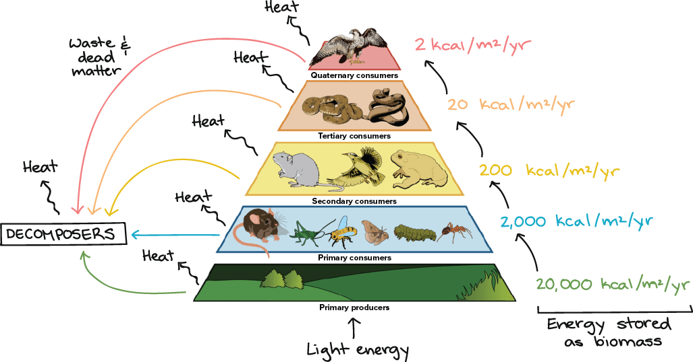

Food Chain
Diagrams & Flow charts:

Theory & Explanation:
Food Chain and Food Web
Every living plant and animal must have energy to survive. Plants rely on the soil, water, and the sun for energy.
Animals rely on plants as well as other animals for energy. In an ecosystem, plants and animals all rely on each other to live.
Scientists sometimes describe this dependence using a food chain or a food web.
Food Chain A food chain describes how different organisms eat each other, starting out with a plant and ending with an animal.
For example, you could write the food chain for a lion like this: grass ---> zebra ---> lion
Links of the Chain
There are names to help describe each link of the food chain. The names depend mostly on what the organism eats and how it contributes to the energy of the ecosystem.
Producers - Plants are producers. This is because they produce energy for the ecosystem. They do this because they absorb energy from sunlight through photosynthesis. They also need water and nutrients from the soil, but plants are the only place where new energy is made.
Consumers - Animals are consumers. This is because they don't produce energy, they just use it up. Animals that eat plants are called primary consumers or herbivores. Animals that eat other animals are called secondary consumers or carnivores. If a carnivore eats another carnivore, it is called a tertiary consumer.
Some animals play both roles, eating both plants and animals. They are called omnivores.
Decomposers - Decomposers eat decaying matter (like dead plants and animals). They help put nutrients back into the soil for plants to eat.
Examples of decomposers are worms, bacteria, and fungi. Lets go back to this example:
grass ---> zebra ---> lion
grass = producer
zebra = primary consumer
lion = secondary consumer
Energy is Lost Like we said above, all the energy made in the food chain comes from the producers, or plants, converting sunlight into energy with photosynthesis. The rest of the food chain just uses energy. So as you move through the food chain there is less and less energy available. For this reason, there are less and less organisms the further along the food chain you get.
In our example above, there is more grass than zebras, and more zebras than lions. The zebras and lions use up energy doing stuff like running, hunting, and breathing. Each Link is Important Links higher up in the food chain rely on the lower links. Even though lions don't eat grass, they wouldn't last long if there wasn't any grass because then the zebras wouldn't have anything to eat.
Food Web In any ecosystem there are many food chains and, generally, most plants and animals are part of several chains. When you draw all the chains together you end up with a food web.
Trophic Levels
Sometimes scientists describe each level in a food web with a trophic level. Here are the five trophic levels:
Level 1: Plants (producers)
Level 2: Animals that eat plants or herbivores (primary consumers)
Level 3: Animals that eat herbivores (secondary consumers, carnivores)
Level 4: Animals that eat carnivores (tertiary consumers, carnivores)
Level 5: Animals at the top of the food chain are called apex predators.
Nothing eats these animals.